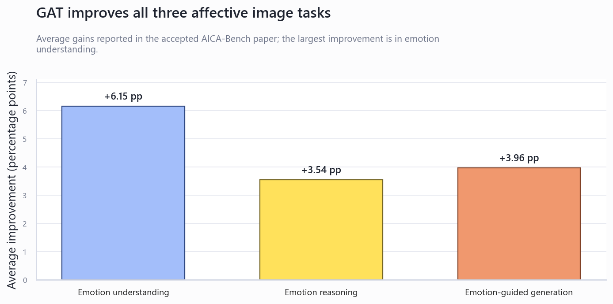

AICA-Bench 与 EmoMirror 融合及答辩指导方案
依据 AICA-Bench 接受提交版全文与当前 Emotype/EmoMirror 仓库实现，给出一条兼顾项目完成度、工程工作量、实验可信度和创新表达的融合路线。
技术结论
最推荐的项目定位是：“面向情绪日记与动态字体表达的多模态情感理解、推理和生成系统”。AICA-Bench 不应作为独立附加实验，而应成为项目的视觉情感分支与评测方法；项目已有的语音、文本、V-A 映射、动态字体、用户修正和数据闭环则构成应用落地。
当前项目已经具备较高完成度，但缺少视觉分支和正式评测
代码审计显示，系统已形成“输入分析—情感映射—动态反馈—用户修正—数据保存—部署”的可运行链路。新增工作应集中在视觉情感、跨模态融合与实验验证，而不是重写现有主链路。
| 能力模块 | 当前状态 | 代码证据 | 答辩价值 |
|---|---|---|---|
| 语音情绪 VAD | 已实现 | /predict、本地 Wav2Vec2、pitch/energy | 本地模型能力与声学特征工程 |
| 文本情绪分析 | 可运行，模型路径仍可加强 | text_emotion.py：回归头/分类器/规则多层回退 | 显式与隐式情绪识别 |
| 统一 V-A 映射 | 已实现 | va_mapper.py、80 标签词典、候选标签与置信度 | 多模态统一接口的基础 |
| 动态字体生成 | 已实现 | LLM + 本地回退、字符索引设计图、动画/颜色/字号 | 核心应用创新与展示效果 |
| 用户交互与数据闭环 | 已实现 | V-A 手动修正、标签修改、日记保存、事件记录、JSON/CSV 导出 | 完成度、人机协同和用户研究基础 |
| 部署 | 已配置 | FastAPI、Docker、Render、SQLite/PostgreSQL | 工程完整性 |
| 视觉情感分析 | 尚未实现 | 当前无图像输入、VLM、视觉证据字段 | 本次论文融合的主要工作包 |
| 系统化评测 | 明显不足 | 缺少基准集结果、消融、时延统计和用户研究结果 | 答辩最需要补强的证据 |

论文中最值得迁移的四项能力
EU 识别图像表达或诱发的情绪；ER 解释视觉证据为何导致情绪；EGCG 生成与目标情绪一致、且不脱离图像事实的描述。
利用图分割得到 2–4 个编号区域，迫使模型先描述客观视觉事实，再进行情感判断，减少只看人脸或依赖语言先验。
生成 3 个“情绪 + 强度”候选，引用区域证据，再进行事实核验和分支剪枝，重点缓解 arousal 强度误判。
ER 评估情感一致性、描述性、因果合理性；EGCG 评估情感一致性和描述性。项目可沿用同一人工评分量表。
论文范围：9 个公开数据集、8,086 张图像、18,124 条指令、23 个 VLM；EU 主指标为 Weighted F1。论文同时指出 72.25% 的 EU 错误属于强度错误，遮挡人脸后 F1 下降 11.1%，并发现开放式输出存在描述浅表化。
建议的融合架构：从“三种识别器”升级为“可解释的多模态闭环”
语音录制
照片/场景图像
用户修正
语音：Wav2Vec2 VAD
图像：EU + GAT
图像：ER 证据链
模态置信度
区域证据
一致性/冲突分数
解释与候选标签
用户拖拽修正
保存与后续校准
关键设计一：区分“表达情绪”和“诱发情绪”
AICA-Bench 的 Expressed Emotion 与 Evoked Emotion 不能直接混合。对情绪日记而言，文本和语音主要描述用户自身状态；图像中的人物表情可作为自身状态证据，而场景诱发情绪更适合作为环境语境先验。否则，一张悲伤照片可能把用户平静的叙述错误拉向负面。
关键设计二：置信度与可靠性加权的后融合
z_fused = sum(r_m * c_m * z_m) / sum(r_m * c_m)
其中 c_m 为模型置信度，r_m 为模态可靠性；当模态距离超过阈值时，不强行平均，而是触发“存在情绪冲突”的可解释反馈。
建议先采用可解释后融合，而不是训练复杂端到端模型。它更适合当前数据规模，也便于消融、答辩说明和用户手动修正。
关键设计三：让视觉证据真正进入动态字体
不要停在“图像输出一个标签”。可将区域证据转为排版控制：颜色/亮度影响色彩与透明度，构图张力影响字距和位移，视觉强度影响缩放与动画速度，ER 的关键词定位到字符索引。这样形成“视觉事实—情感状态—排版参数”的可解释链路。
建议新增的工程模块
| 模块 | 职责 | 建议接口/输出 |
|---|---|---|
visual_emotion.py | 图分割、区域编号、VLM EU/ER/EGCG 调用与本地回退 | visual_emotion：expressed、evoked、intensity、regions、evidence |
multimodal_fusion.py | 标签到 V-A 对齐、可靠性加权、模态冲突检测 | multimodal_emotion：fused_vad、agreement、conflicts、contributions |
typography_grounding.py | 把区域证据、V-A 和声学强度转成字符级设计图 | 保持现有 llm_design 契约不变 |
evaluation/ | 基准子集、消融、时延和评分脚本 | CSV/JSON 结果与答辩图表 |
POST /analyze-image | 独立验证视觉分支 | 便于模块测试与现场演示 |
POST /analyze-multimodal | 统一接收文本、音频、图像 | 返回各模态原始结果、融合结果和设计图 |
实验设计决定答辩可信度
不要复现 23 个模型和 8,086 张图像。课程/毕业项目更适合做一个有代表性的子集与完整消融。建议选择 200–500 张图像，覆盖人物场景、无人物场景、艺术照片和抽象图像；比较 1 个闭源 VLM 与 1 个可部署开源 VLM。
| 实验 | 对照组 | 指标 | 要证明什么 |
|---|---|---|---|
| 视觉分支复现 | Basic Prompt vs CoT vs GAT | Weighted F1；强度错误率；V-A MAE | GAT 是否改善视觉情绪与 arousal 校准 |
| 开放式质量 | 无区域证据 vs 视觉脚手架 | Alignment、Descriptiveness、Causal Soundness，1–5 分 | 解释和生成是否更具体、更可信 |
| 多模态消融 | Text / Audio / Image / 简单平均 / 置信度融合 | V-A MAE、标签 F1、一致率 | 融合是否优于单模态与朴素平均 |
| 冲突处理 | 强制融合 vs 冲突检测 + 用户确认 | 用户最终修正距离、信任评分 | 人机协同是否减少错误反馈 |
| 排版生成 | 静态文本 / V-A 规则 / LLM / 视觉证据驱动 | 情感匹配、表达力、可读性、偏好 | 动态字体是否真正增强情感表达 |
| 工程性能 | 不同输入与回退路径 | P50/P95 时延、失败率、内存、WAV/WebM 成功率 | 系统完成度和可部署性 |
局限性需要主动讲：视觉情感具有主观与文化差异；论文只处理静态图像和英文提示；自动评分模型也有偏差；当前文本回归头和多模态可靠性参数需要更多标注数据校准。主动说明边界会增加可信度，而不是减分。
创新性应按四层表达，而不是堆模型名称
实施优先级
答辩 PPT：14 页主线框架
主叙事只讲一件事：现有情绪识别通常停留在单模态标签，本项目把多模态理解、视觉证据推理和动态字体表达连接成可交互、可修正、可评测的完整系统。
| 页 | 标题 | 核心内容与应放的证据 |
|---|---|---|
| 1 | 封面 | 项目名、成员、指导老师；副标题直接写“多模态情感理解与动态字体生成系统”。 |
| 2 | 问题与场景 | 用户情绪表达隐晦、单一标签缺乏解释、静态文本缺乏情感反馈；用 1 个真实日记场景引入。 |
| 3 | 研究目标与需求 | 理解文本/语音/图像情绪，解释原因，生成情感一致排版，允许用户修正并保存。 |
| 4 | 相关工作与缺口 | 简述语音情感、文本情感、AICA-Bench；指出现有工作缺少“多模态融合 + 表达生成 + 人机闭环”。 |
| 5 | 系统总体架构 | 放一张最重要的全链路图：输入层、分析层、统一情感层、生成层、交互与数据层。 |
| 6 | 语音与文本情感模块 | Wav2Vec2 VAD、声学特征；文本分段、显式/隐式线索、回退策略；给一条真实输入输出。 |
| 7 | AICA 视觉情感模块 | EU/ER/EGCG，视觉分割编号，GAT 三阶段；放原图、区域图、证据链和最终标签。 |
| 8 | 多模态融合与冲突处理 | 统一 V-A-D、置信度加权公式、expressed/evoked 区分；展示一个模态一致案例和一个冲突案例。 |
| 9 | 情感到动态字体 | V-A、声学强度、视觉证据如何控制颜色、大小、字重、字距和动画；放字符级设计图示例。 |
| 10 | 系统实现与完成度 | 前端、FastAPI、模型、数据库、导出、Docker/Render；用“已完成/进行中”矩阵，不要只贴代码。 |
| 11 | 实验设计 | 数据子集、模型、基线、指标、用户研究；先定义怎么验证，再给结果。 |
| 12 | 实验结果与消融 | 三张主图：GAT 提升、融合消融、排版用户评分；每张图上方写一句结论。 |
| 13 | 创新点总结 | 按集成、应用、改进、项目级原创四层展示；每项必须对应已实现模块或实验结果。 |
| 14 | 总结与展望 | 完成了什么、结果证明什么、局限与下一步；最后回到“理解—推理—生成—修正”的闭环。 |
现场演示建议：控制在 90 秒
- 输入一段包含隐性压力的文本，展示分段情绪、V-A 和动态字体。
- 上传相关场景图，展示区域编号、视觉情绪与证据解释。
- 播放/上传一段语音，展示声学 VAD 与融合结果。
- 故意展示一次模态冲突，拖动 V-A 或修改标签，保存日记。
- 展示历史记录或导出结果，证明系统不是一次性 Demo。
备用页建议：API 返回结构、数据库表、模型参数、GAT 提示词、更多失败案例、隐私与伦理、部署与资源占用。老师追问时再打开，不占主线时间。
老师可能追问的四个问题
- 为什么需要图像？图像提供环境与非语言语境，并支持情绪原因解释；项目区分表达情绪和诱发情绪，避免简单混合。
- 融合为什么有效？用单模态、简单平均、置信度融合的消融结果回答，而不是只讲公式。
- LLM 是否决定情绪？不是。文本/语音/视觉分析产生结构化情感状态，LLM 主要负责受约束的动态字体设计；系统保留本地回退。
- 原创在哪里？论文提供视觉评测与 GAT；项目贡献是跨模态统一、冲突处理、视觉证据驱动字符级排版和用户修正闭环。